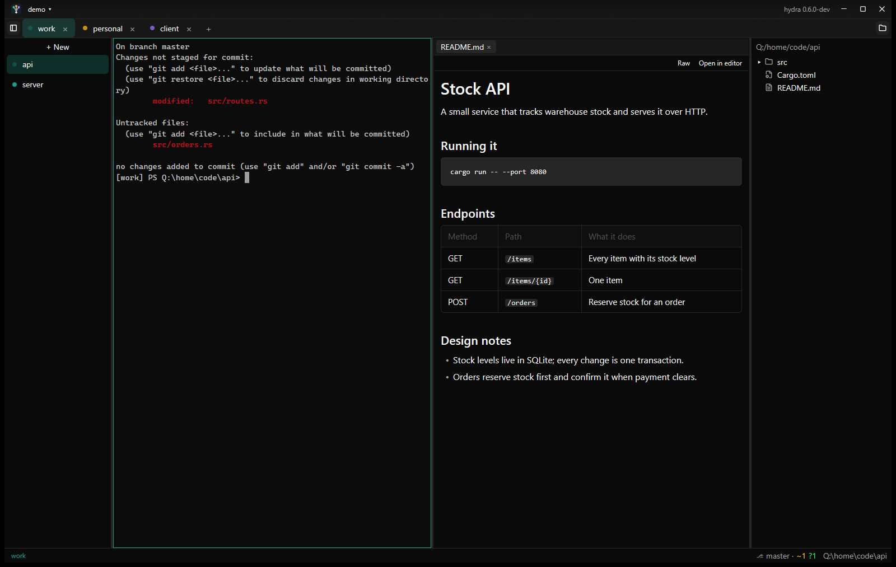
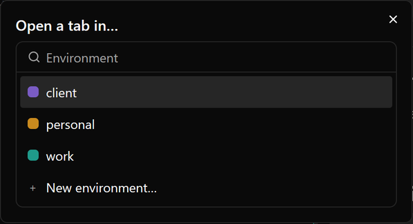
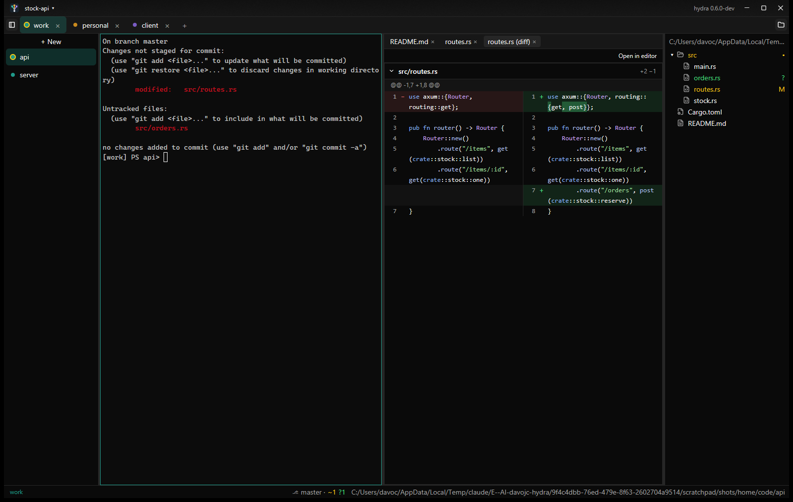
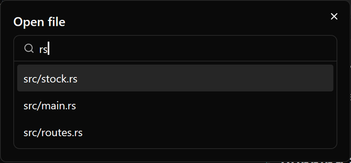
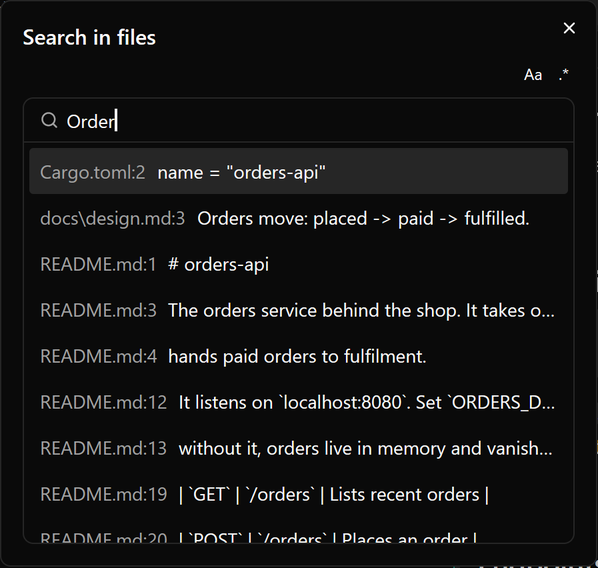
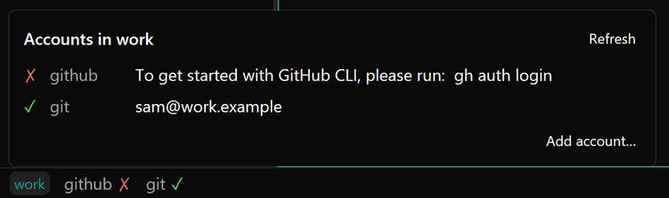
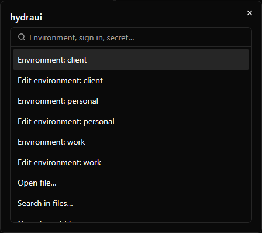

hydraui, the desktop app.
hydraui is a terminal app built around hydra's environments. Each environment you add gets a tab, coloured to match, with a list of its terminals beside it and that environment's logins already in place. Around the terminals it adds what you reach for while working: a file tree that shows git changes, a pane for reading and editing files, quick open and search, and each environment's accounts in the status bar.
Download the installer hydra + hydraui
Portable: hydraui.exe · hydra.exe

Install and first start
Run the installer: it installs hydraui and hydra for you alone, with no admin prompt, puts hydraui in the Start menu and hydra on your PATH. Prefer a single file? The portable hydraui-x86_64-pc-windows-msvc.exe from the latest release runs from anywhere and doesn't need hydra.exe. Either way hydraui reads and writes the same ~/.hydra folder as the CLI, so environments made with either show up in both.
The first time, hydraui opens a terminal in your home folder. With no environments yet, it asks you to name one and creates it, as hydra env new does. From then on hydraui starts on a page of your recent layouts: pick one, or New window for a plain terminal. A window saved as a layout keeps its file up to date as you work (its environments, their terminals and folders, the file tree and the files in each file pane); an untitled window isn't kept when you close it.
A new window's first environment is the one bound to the home folder, else default_env from the settings, else you pick one:

hydra shell gives, with one exception: it skips the CLI's folder guard. A push to the wrong account fails on its credentials anyway. If a terminal's folder is bound to a different environment than the one it runs in, the pane shows a warning badge.Environments and terminals
The tab strip shows one tab per environment in the window, tinted with its colour (color in its env.toml). A dot on a tab shows its busiest terminal: working, waiting or idle, so a background environment that needs you is easy to spot. + at the end of the strip lists the environments not yet in the window, with New environment… last; choosing one adds its tab with a terminal and selects it.
Down the left side is the selected environment's list of terminals, in the order you made them, each with an activity dot and a close button on hover. In a terminal running Claude, the dot follows what Claude says it is doing, through hooks hydra adds for you, and the row says working, needs you (when Claude is asking a question or for permission) or idle (finished, your turn). When a Claude session out of sight finishes or starts asking for you, its environment tab and row get an amber dot until you look at it, the taskbar button flashes if hydraui is in the background, and a toast names the terminal: click it to go there. Click one to show it. + New at the top (or Ctrl+T) adds a terminal in the same environment, in the environment's root folder (its home, else the folder bound to it), else the shown terminal's folder. A terminal is named after its folder until you give it a name: the name is yours, and a program's own title never replaces it. The button at the left end of the tab strip collapses the list to give the terminal more room, and brings it back.
- Right-click a terminal: Rename… (an empty name goes back to the folder's), Restart (in the folder it was in, so an edited
env.tomlapplies) or Close. - Right-click an environment's tab: New terminal, Restart environment (all its terminals) or Close environment. Closing or restarting asks first if a command is running, and closing also if a file has unsaved edits.
- Closing a single terminal also asks when a command is running in it. An environment whose last terminal closes keeps its tab, with a New terminal button.
- Ctrl+PageDown and Ctrl+PageUp move between terminals in the list; Ctrl+Tab and Ctrl+Shift+Tab move between environment tabs; Ctrl+W closes the shown terminal.
- Terminals you aren't looking at keep running and keep their scrollback.
- Selecting text copies it, with a brief "Copied" label. Ctrl+Shift+V pastes and Ctrl+F finds in the scrollback.
- Scrolled up into the history, a ↓ button appears at the bottom right and jumps back to the latest output.
- Tab and Shift+Tab go to the shell, so PowerShell's completion cycles through matching folders and files.
The status bar shows the shown terminal's environment, its tools with a ✓ or ✗, the git branch and changes (⎇ main · +1 ~2 ?1) and the current folder. If an environment can't start (a missing SSH key, a secret that isn't stored), the pane shows hydra's error and how to fix it, with Retry.
Task board
While Claude is busy in a terminal you will think of what to do next. The task board is a place to jot those ideas down without interrupting it, then pick them up later. Right-click a terminal in the list and choose Tasks: that terminal gets a Tasks tab beside it, with the terminal and Tasks ✕ in a small strip at the top. ✕ closes the tab, and the cards stay. Each terminal has its own tabs, so another terminal shows its own view, and the layout file remembers which terminals have a Tasks tab.
The board belongs to the terminal's project: the git repository its folder is in (a linked worktree shares its repository's board), or, outside a repository, the folder itself. A folder inside a repository, including a home folder that is itself a repository, shares that repository's board, and terminals in the same project show the same cards.
There are five columns, side by side, each with its own color on the dot before its heading and down the left edge of its cards:
- Backlog (grey): ideas not yet picked up. Its + adds a new card at the top.
- Pickup (blue): what you want to explore with Claude next. Right-click a Pickup card and choose Take in new worktree to give it a branch of its own (
task/…) in a worktree beside the repository, with a Claude terminal there already working on it; when you move the card to Done, hydraui offers to merge the branch and remove the worktree. - InProgress (orange): what is being worked on now.
- Verify (yellow): work that is committed and waiting for you to check it.
- Done (green): finished. Its Clear button removes every card in the column, after asking how many.
A card is a short paragraph, with no title and plain text. Click a card to edit it where it is. Enter saves it, Esc cancels, and clicking elsewhere on the board saves it too, as does switching to the terminal tab, another terminal or another environment. Saving an empty card deletes it, and so does the trash icon that shows while the pointer is over a card, after asking. Drag a card within a column or into another, and a line shows where it will land. Right-click a card for Move to any other column (the top of it), Move up, Move down and Delete (which also asks first). Every change is written to the file at once, so there is no Save button. If a save fails, the card stays open with its text and a message says why, and neither the Tasks tab nor the window will close until the save works.
The file
Cards live in .hydra/tasks.md in the project, created when you save the first card. It is ordinary markdown, so you can read and edit it in any editor, and so can Claude. The board watches the file and shows what changes in it, and a change you make on the board is applied to the file as it now is rather than over it, so neither side loses an idea. If the card you were editing was moved, changed or removed in the file meanwhile, what you typed is added as a new card at the top of Backlog and a message says so.
# Tasks ## Backlog - Let the terminal list show which terminals have unread output, maybe a dot that clears when you look at it. ## Pickup - Ctrl+K should open the launcher from anywhere, including the file pane. ## InProgress - [hydra] Add the terminal list dot for unread output. ## Verify ## Done - Collapse button for the terminal list.
- One card is one top-level list item; a long card wraps onto lines indented by two spaces. Headings match whatever the case or spacing, so
## In Progressis InProgress. Checkboxes ([ ],[x]) are accepted and dropped. - Order in a column is the order in the file, top first.
- Any other text in the file is kept, moved under a
## Notesheading at the end of the file.
Claude and the board
In an environment with a [claude] section, a Claude session running in a hydraui terminal finds the board itself, through a hydraui tool server that hydra adds for you and whose five tools it pre-approves, so Claude doesn't ask permission. Claude can read the whole board, add an idea at the top of Backlog, take a card from Pickup (it moves to the top of InProgress), move a card it took to Verify once its work is committed (giving the commit), and list the cards it took. Reading the board also tells it which other Claude sessions are working in the same project; when there are others, it is told to work in a git worktree of its own so the sessions don't change files under each other. Everything else stays yours: only you move cards into Pickup or Done (so a card goes from Verify to Done when you have checked it), move them back, edit, reorder or delete. Waking an idle session when a card lands in Pickup isn't done, so ask Claude to check the board; it is also told to look at Pickup after finishing a piece of work.
A card Claude takes is written - [name] text, and the Tasks tab shows the name as a small badge: click it to go to that terminal. The name is the terminal's title if you gave it one, else the name of the folder it started in, with -2, -3 added if another terminal in the window has the same name. Renaming the terminal changes it; a cd doesn't. A card Claude moves to Verify is written - [name @5e9a827] text: the card shows the commit beside the name, and clicking it opens what that commit changed as a diff in the environment's file pane, so checking the work is one click. Moving a card back to Backlog or Pickup clears the name (and commit), and Verify and Done keep it. The [name] prefix is only read in InProgress, Verify and Done. If a session creates the board file in a git repository, you get the same Keep tasks private? question. To leave an environment out, set mcp.exclude = ["hydraui"] in its [claude] section; outside hydraui the server quietly offers no tools.
Commit or keep private
In a git repository, the first card you save in a new project asks Keep tasks private?, unless the project's .gitignore already keeps the file out of git: Keep private adds .hydra/tasks.md to the project's .gitignore, and Commit tasks leaves things as they are so the file can be committed. You can change your mind later with the ⋯ menu at the right of the Done column's header, which offers the other choice. If another .gitignore rule already ignores the file, the menu says Ignored by another .gitignore rule instead. The menu, and the question, appear only in git repositories.
File tree and git
Ctrl+B shows the file tree on the right, rooted at the shown terminal's current folder; it follows you as you cd and as you switch terminals or environments. Drag its edge to resize it; the terminal list on the left drags the same way. It respects .gitignore and updates as files change.
- Click a file to open it in the environment's file pane.
- Ctrl+click a file to type its quoted path at the terminal's cursor.
- Double-click a folder to
cdthere, when the shell is at its prompt.
In a git repository, files show their status: M modified in yellow, A added and ? untracked in green, D deleted in red, ignored files dimmed. A folder that holds changes gets a dot. Right-click a changed file and choose Show changes for a side-by-side diff against the last commit:

Right-click a file or folder for New file…, New folder…, cd here, New terminal here (folders), Reveal in Explorer, Rename…, Delete… (to the Recycle Bin, after asking), Copy path and Copy relative path. Open files follow a rename.
The file pane
Opening a file splits the middle: the shown terminal on the left, the file pane on its right, next to the tree, with a tab per open file. Each environment has one file pane, and it stays beside whichever of its terminals is shown.
- Raw is an editor with syntax highlighting, line numbers and find. Ctrl+S saves, keeping the file's line endings and encoding, so a save changes only what you edited.
- Rendered shows Markdown as a page. Markdown files open rendered; the header switches between the two. Links open in your browser, and images load only from local files.
- OpenAPI 3 specs (
.yaml,.yml,.json) open as API docs: endpoints grouped by tag, each with its parameters, request body and responses, and schemas you can unfold. A filter finds endpoints by path, method, summary or operation id. Raw shows the file, and your edits show up in the docs as you type; if an edit breaks the YAML, the docs say which line, with Go to line. - Open in editor hands the file to your editor (
editorin the settings, else Windows' default). - If the file changes on disk it reloads; if you have unsaved edits you get Reload or Keep mine. Closing a file with unsaved edits asks first.
- Files over 5 MB and binary files aren't shown, with Open in editor instead.
Finding files
All three search the shown terminal's folder and respect .gitignore.
Clickable paths
Hold Ctrl over terminal output and a path under the mouse is underlined; Ctrl+click opens it at its line. Compiler errors, test failures and grep -n output all work: src/main.rs:42, src/main.rs:42:7, src\main.rs(42,7), even when a long path wraps onto the next row. Web links, such as the URL a sign-in prints, open in the browser the same way.
Quick open Ctrl+Shift+O
Type a few letters of a file's name; matches are ranked so consecutive letters, word starts and the file name count most. name:42 opens at line 42.

Search in files Ctrl+Shift+F
Results appear as you type, as file:line and the line. Aa matches case and .* searches with a regular expression. Enter opens the file at the match.

Accounts
The status bar lists the shown environment's tools, each with a ✓ when its login matches and a ✗ when it's missing or wrong. Click the environment's name for the details, checked again as it opens:

- Add account… turns a tool on for the environment, as
hydra adddoes. Tools that only need a sign-in (Claude Code, GitHub, Azure, Google Cloud, Codex, Google Workspace) sign in straight away in a new terminal; git, AWS, Gemini and Kubernetes ask for their settings first. - Use from… on a tool borrows another environment's login for it, so you sign in once and use it in both.
- Switch account… on a tool runs its sign-in again in a new terminal, to move the environment to another account.
- On a Claude Pro or Max account, the status bar also shows how much of Claude's limits the environment has used: claude 5h 42% · 7d 18%, amber from 80% and red from 95%. Hover it for the account and when each limit resets; click it for the accounts. The numbers come from Claude's own status line, which hydra passes to hydraui; if you have a status line of your own, hydra keeps it and runs it for you.
- A borrowed login says which environment it comes from.
The launcher
Ctrl+Shift+P opens the launcher: type to filter, Enter to run.

| Entry | What it does |
|---|---|
| Environment: env | Adds that environment's tab to the window, or selects it if it's already there. |
| Edit environment: env | Opens that environment's env.toml in the file pane. Restart the environment afterwards to apply it. |
| Sign in: tool in env | Runs the tool's sign-in in a new terminal, adding the environment's tab if needed, as hydra auth does. |
| Set secret: env/key | Stores a value in a masked box, for secrets an env.toml refers to but that aren't stored yet (or any other). |
| Open file… / Search in files… | Quick open and search. |
| New environment… | Name it and it's created, as hydra env new does, with its tab added. |
| Delete environment… | Like hydra env rm: refused while it has terminals open; otherwise lists its folder and secrets, and asks whether its saved logins go too. |
| Set environment home… | Pick a folder: new terminals for the environment open there, and the folder is bound to it. |
| Open layout file… / Save layout as… / Start page | Open and save layout files, or go back to the start page. |
| Open config folder / Reload config | Opens ~/.hydra/hydraui, where the settings live; reloads the settings and hydra's bindings without restarting. |
Layout files
A layout file (*.hydraui) is a window written down: its environments in tab order, each one's terminals (their names and folders) and file pane, the file tree and terminal list widths and what is selected. Each window has one layout, named in its title bar; the name's ▾ menu has Save layout as…, Open layout file…, Recent and Reveal in Explorer. Once saved, the window keeps the file up to date. Opening a layout in a window that already has one opens a new window; opening one that's already open brings its window forward, so two windows never write the same file. With the installer, double-clicking a .hydraui file opens it.
version = 2 active_env = "work" list = { width = 240.0 } # optional: the terminal list's dragged width (hidden = true when collapsed) [[env]] name = "work" [[env.terminal]] title = "claude" # optional: the name you gave it cwd = "E:/work/api" command = "claude" # optional, hand-written: runs whenever the layout opens [[env.terminal]] cwd = "~/blog" claude = true # written by hydraui: Claude was running here
- An environment that no longer exists, or a terminal whose folder is gone, is skipped with a message but kept in the file.
- Scrollback, running programs and unsaved edits aren't saved, with one exception: a terminal that had Claude Code running when the layout was saved (closing the window counts) starts it again with
claude --continuewhen the layout reopens, picking up that folder's latest conversation. - Layouts made by earlier versions of hydraui (without
version = 2) aren't opened, and the file is left as it is. Sets and group files are gone;~/.hydra/hydraui/setsis no longer read.
Keyboard shortcuts
| Action | Default | Setting |
|---|---|---|
| New terminal | Ctrl+T | new_terminal |
| Close terminal | Ctrl+W | close_pane |
| Next / previous terminal | Ctrl+PageDown / Ctrl+PageUp | next_terminal, previous_terminal |
| Next / previous environment | Ctrl+Tab / Ctrl+Shift+Tab | next_tab, previous_tab |
| Copy / paste | Ctrl+Shift+C / Ctrl+Shift+V | copy, paste |
| Find in scrollback | Ctrl+F | find |
| Launcher | Ctrl+Shift+P | launcher |
| File tree | Ctrl+B | file_tree |
| Quick open | Ctrl+Shift+O | open_file |
| Search in files | Ctrl+Shift+F | search |
| Save file | Ctrl+S | in the file pane |
Change any of them under [keys] in the settings: new_terminal = "ctrl-alt-n", or "" to unbind. Key changes apply the next time hydraui starts.
Settings
hydraui's own settings live in ~/.hydra/hydraui/config.toml. Every key is optional, and a mistake in one is reported without costing you the rest. Reload config in the launcher applies changes without restarting.
font = "Cascadia Mono" # the default font_size = 14 theme = "dark" # or "light": hydraui's own controls default_env = "work" # for new windows in folders nothing is bound to default_shell = "pwsh" # or "bash" editor = "code" # for Open in editor [colors] # the terminal's colours, #rrggbb background = "#0b1116" [keys] new_terminal = "ctrl-alt-n"
[colors] also takes foreground, cursor, selection and palette, a list of the 16 ANSI colours.
Updates
The title bar shows the version you're running (hydra version) on the right. hydraui checks GitHub for a new release when it starts and every hour after, and the launcher's Check for updates (Ctrl+Shift+P) checks straight away and says what it found. When there is one, the title bar shows Update hydra version beside the version:
- Clicking it downloads
hydraui.exeand, if it finds yourhydra.exe(next to hydraui, or on yourPATH), that too, and checks both against the release's SHA-256 checksums. It won't update while ahydracommand is running. - Nothing is replaced until everything has downloaded and checked out; if replacing one fails, the other is put back.
- The button becomes Restart to finish. Restarting reopens your layout (an untitled window is saved first), but stops what's running in it, so it's always your call.
Builds you compile yourself never offer updates.